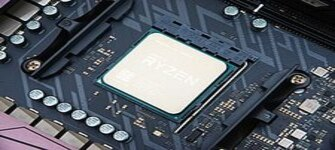

The Central Processing Unit, known by the acronym CPU, is the fundamental component of the computer, responsible for interpreting and executing instructions and processing data. In modern computers, the function of the CPU is performed by one or more microprocessors. A CPU that is manufactured as a single integrated circuit is known as a microprocessor.
Central processing units (CPUs) in the form of a single microprocessor are not only present in personal computers (PC), but also in other types of devices that incorporate a certain processing capacity or "electronic intelligence", such as: controllers from industrial processes, televisions, cars, calculators, airplanes, cell phones, appliances, toys and many more. Currently, the most popular PC microprocessor designers and manufacturers are Intel and AMD; and for the mobile device market, the main ones are Samsung, Qualcomm, Texas Instruments, MediaTek, NVIDIA and Intel.
In computers, the microprocessor is mounted on a so-called motherboard, on a socket known as a CPU socket, which allows electrical connections between the circuitry on the board and the processor. A heat sink made of a material with high thermal conductivity, which is generally aluminum, and in some cases copper, is attached to the processor fitted to the motherboard. This is essential in microprocessors that consume a lot of energy, which, to a large extent, is emitted in the form of heat: in some cases they can consume as much energy as an incandescent lamp (40 to 130 watts).